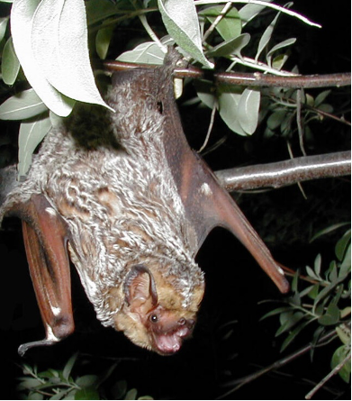
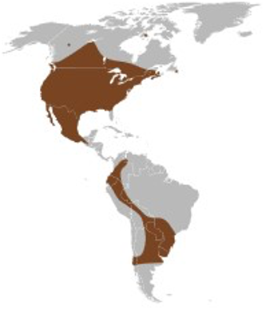

Hoary Bat (Lasiurus cinereus))

Hoary Bat - Paul Cryan, USGS1
Description: One of North America’s largest bats with a wingspan of 13 to 16 inches and a body length of 5 to 6 inches, it weighs about one ounce. It has yellowish brown fur with white tips, a dark mask and short rounded ears with brown edges. Its wing membranes are brownish black, and unlike other bat species the tail membrane is densely furred. Juvenile fur is grayish, but also white tipped.
Migration & Habitat: These solitary bats live in both coniferous and deciduous forests and prefer to roost in large trees with dense foliage. They are especially common in forests of the Pacific Northwest and prairie states. One of the most wide-ranging bat species in the Americas, they migrate from Canada to Argentina.

Distribution map of the Hoary Bat from The Natural History of Canadian Mammals 2
Reproduction: They mate in the fall, but fertilization occurs in the spring when weather is warmer, and food sources are abundant. Delayed fertilization helps ensure the survival of the pups. The litter size is typically two but can be from 1 to 4. The pups cling to the mother as she sleeps during the day but hang onto twigs or leaves while she forages at night. They can fly on their own in about a month.
Diet: They feed mainly on insects, primarily moths, and a constant supply is required to sustain their high metabolic rate. They hunt nocturnally, foraging in a variety of open habitats using echolocation to navigate and detect insects in the dark.
Conservation Status: They “experience the highest rate of mortality among bats at wind farms in North America. In April 2023, the U.S. Fish and Wildlife Service added the hoary bat to their National Listing Workplan for listing consideration in 2027, which could lead to their being federally regulated as a threatened or endangered species.”3 Oregon lists them as a Species of Concern that requires specific management considerations.
Prepared by Vickie Stiteler
Credits:
1Title: Hoary bat roosting on the branch of a tree
Credit: Cryan, Paul USGS
Source: https://www.usgs.gov/media/images/hoary-bat
Rights: Public Domain
2
Range Map: Naughton, Donna. 2016. The Natural History of Canadian Mammals.
Michel Quintin Publisher, Waterloo, Québec.
3
EPRI Research. Dec 06, 2023. Program on Technology Innovation: Hypothetical Financial
Implications through 2050 for Wind Energy Sector Associated with Potential Hoary Bat
Regulations. Retrieved July 24, 2025, from
https://www.epri.com/research/products/000000003002024622
44National Geographic. (1979). Wild Animals of North America.
Washington, D.C.: National Geographic.